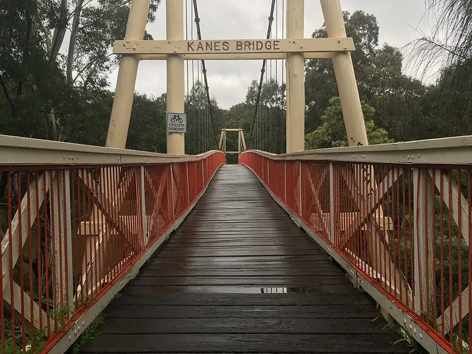

Studley Park Picnic Area, Kew
Studley Park Picnic Area is a park in Kew, in the Boroondara City Council area, good for all ages. Yarra Bend Park/Studley Park Rd (bus) is a 5-minute walk away, the nearest public toilet is about 74 m away and dogs are allowed on a lead.


Quick facts
- Toilets
- 74 m away
- Dogs
- On lead
- Public transport
- Yarra Bend Park/Studley Park Rd, bus (routes 200, 207, 241), 5 min walk
Details
- Dogs
- on lead (Parks Victoria)
Questions parents ask
- Where is Studley Park Picnic Area?
- Studley Park Picnic Area is in Kew, Victoria.
- Is Studley Park Picnic Area free?
- Yes. It is a public park, free to visit.
- Can I bring my dog to Studley Park Picnic Area?
- Yes, on a lead.
- Are there toilets at Studley Park Picnic Area?
- The nearest public toilet is about 74 m away.
- How do I get to Studley Park Picnic Area by public transport?
- The closest stop is Yarra Bend Park/Studley Park Rd (routes 200, 207, 241, 305), a 5-minute walk.
Nearby places
- Loop Picnic Area
Park · FairfieldToilet nearbyDogs allowedFreeBus 8 min walk
- Playground at Loop Picnic Area
Playground · FairfieldToilet nearbyFreeBus 8 min walk
- Galatea Point
Park · KewFreeBus 7 min walk
- Horse Arena
Beach · AbbotsfordFreeBus 10 min walk
- Playground on Yarra Boulevard
Playground · AbbotsfordToilet nearbyFreeBus 6 min walk
- Kappaya Japanese Soul Food Cafe
Cafe or restaurant · AbbotsfordToilet nearbyBus 4 min walk
- Quarries Park Skate Park
Skate, BMX or pump track · Clifton HillFreeBus 9 min walk
- Victoria Gardens Shopping Centre
Shopping centre · RichmondToilet nearbyTram 5 min walk